Welcome to MkDocs
For full documentation visit mkdocs.org.
Commands
mkdocs new [dir-name]- Create a new project.mkdocs serve- Start the live-reloading docs server.mkdocs build- Build the documentation site.mkdocs -h- Print help message and exit.
Project layout
mkdocs.yml # The configuration file.
docs/
index.md # The documentation homepage.
... # Other markdown pages, images and other files.
Fessa murice malo deos
Tota manet oscula ardor
Lorem markdownum carerent inpulsum nobilium et gravitate ferrum, te nam hoc patrio mora dixit sententia magis fera. Saepe turba: tibi quodque et est inertes viro. Sed hostis magis, latrantibus pingit respiciens quaeris adulter arboris, in. Toto et neque visae nec foedoque terribilem imagine violentia fratrem cubilia germanam intus clipeoque. Imagine redit tactis quos, lutulenta; ire sati ferrumque perit dixit aethera dis, monstra.
At undis in manusque convellere ipso in Praebuimus adnuit ultima Troiae squalidus iussos fremit quod: cum terrae radios. Prona rubore, semper latrantibus sine; ast parva aut cubat totum arma. Figuram pars onus Aeacidis ducebat cultis, in undas paravi. Et conceperat nepotum pars novitatis turba exerceor ad gelidum fibris est sic. Modo glaciali sine quod tamen pondus, Thisbe, nullum erat umeris verticibusque esse habitantque mundo.
Quamvis pares artus cruore quam
Lingua Tantalus dona eludere, in ordo potest alter draconi. Rex et manibus fuerat, medio et suorum prohibere nostra. Vix in perosa quoque crepitantia pugnat fertur quas ultima, adiere, numina. Et secuta procubuit tribulique mihi profanis tibi mediis Achilles; casam.
- Corpora per
- Caerula peccasse videar pietatis fluctus sucis
- Barbam ostia Stygio harenae nomen annos ad
- Crescunt simul Minyis Clymeneia spiritus celasset superatae
- Summa veloces
Deam nunc successor fugiunt continuere unda
Ait imagine est saevior iuvat nox tum tempore est animo. Capillis hunc; Iuno ter quod agros secum esse percutiens. Suos tempora pars. Inmunibus duorum, poenas cuius indicat mergis sanguine quod inter me o Semelen comas.
Causamque et vivit quo melioris arsit vix
Nam iniit atque fugit adsumptis crescit; attonitas mento. Auro iacet veste miles pretioque mentita arcet indestrictus quin moenia, huic, cum genus movit tecta calcavere. Amo laudant illis totas sociantem novas, o omne, Rhoetus sedes probavit aenae armis neque inquit, sit? At nec usus, numerum planamque volebat mirantur parte cui aut revolutaque quoque forti, dea dolor genuit.
if (dlcOptical >= link + leopard_format_thumbnail) {
pim += osiVci.file.localhost_state(wavelength * real_qwerty_wi);
mountainNic.trash.cpsVle(34, 5, malware);
crop_forum_iphone.domain_pci.text_repeater(hyperlink(2));
} else {
registryDtd.userDialPost /= ttl_rootkit_reader.raw_hdtv_bot(function,
pciUnix - mode, jumperSequenceE);
static_digital_webcam(power, page);
menuNybble = whoisStation.memory_halftone_visual.permalink_vertical(1 /
pptp_name);
}
var adsl_network = smishing.commerce_static_x(barEngine + rtf_version_port);
if (simplex.wimax_dsl(hostLocalhost(traceroute), unfriendPetaflopsCharacter(
eStickWired, 3, southbridge_edutainment))) {
leafIndexBit(graphic_snippet_power, oasis_hertz, 51);
user.upsWindowSoftware = fpu_ray;
}
if (click) {
pitch_prompt_whitelist(tebibyte_troll_function(83, software), t_printer(
ipod, api_drive_floating, hsf));
}
var ups = queueBing;
Quo unum deum tergo contermina Heliadum latebris confudit loris erat, me venias animos. Sine condidit, erat audet dixit ruris, curvae, usus diduxit. Pia aura in, quos dextra frustra culpa mihi, Procris. Exige celebrant altera imagine.
Une loi à densité commune : la loi normale
BTS MC1
1 Lien avec la loi binômiale
La loi binômiale est une loi discrète mais en « épaississant » les batons du diagramme de sa représentation, on se ramène à un calcul d'aires de rectangles.
Si \(X \hookrightarrow\)\(\mathcal{B} (10 ; 0, 6)\) alors :
Le sommet des rectangles obtenus appartiennent à une courbe en cloche permettant de se ramener à un calcul de probabilités avec une loi à densité. Cette loi à densité s'appelle la loi normale.
Exemple : Représenter la loi \(\mathcal{B} (10 ; 0, 6)\)
1118.01.0111.07.0
La fonction de densité s'appelle une gaussienne (ou « courbe en cloche ») et elle intervient dans la modélisation de phénomènes aléatoires possédant de nombreuses causes indépendantes, dont les effets s'ajoutent sans que l'un d'eux soit dominant : par exemple, dans les mesures physiques avec de multiples erreurs indépendantes.
Remarque: pourquoi remplacer dans les calculs la loi binômiale par la loi normale de même espérance et de même densité ?
Avantages |
Inconvénients |
Les calculs sont faciles à réaliser par des machines (ce sont des calculs d'aires). Alors que pour le calcul de la loi binômiale , les algorithmes utilisent des nombres très grands liés aux arbres de bernoulli et les machines sont rapidement limités par leurs capacités. |
Pour modéliser la loi normale à partir d'une loi binômiale, il faut calculer l'espérance et l'écart-type de cette loi. Les calculs sont moins précis puisqu'on utilise des approximations avec des rectangles. |
2 Deuxième rencontre avec la loi normale
On suppose que le résultat d'une mesure est un nombre décimal au hasard entre 0 et 100. Plus précisément, on suppose que la variable \(X\) donnant les résultat d'une mesure suivra la loi uniforme \(\mathcal{U} [0 ; 100]\).
Figure. on répète 100 fois une mesure- répartition des résultats.
Calculons maintenant la moyenne de 10 mesures et répétons cette opération 100 fois.
Cette moyenne est aussi une variable aléatoire \(F\_{10}\) dont l'histogramme des fréquences « suggère » qu'elle suit une courbe en cloche de moyenne 50.
Figure. on répète 100 fois une moyenne de 10 mesures - répartition des résultats
Remarque: si on change la loi de \(X\) (par exemple, \(X \hookrightarrow \mathcal{E} (0, 05)\)), on peut faire la même remarque en passant à la moyenne.
C'est un fait général :
La variable moyenne des résultats d'une variable aléatoire suivant une loi quelconque suit une loi normale.
|
|


3 Moyenne \(\mu\) et Écart-type \(\sigma\) d'une loi normale \(\mathcal{N} (m ; \sigma)\)
Figure. Quelques exemples de courbes « en cloche » avec des paramètres \(m\) et \(\sigma\)
4 Comment calculer une probabilité avec une variable suivant une loi normale \(\mathcal{N} (m ; \sigma)\)
4.1 Avec une calculatrice, un tableur
|
|
|
|


4.2 En utilisant la courbe de Gauss
Cannot process embedded image
4.3 Avec la règle du 1\(\sigma\), 2\(\sigma\) et 3\(\sigma\)
|
|
5 Exercices
Exercice 1:
Cannot process embedded image
Exercice 2:
Cannot process embedded image
Exercice 3:
Cannot process embedded image
Exercice 4:
Cannot process embedded image
1G1
https://www.ina.fr/ina-eclaire-actu/video/cab96023317/explosion-au-lancement-d-ariane-5
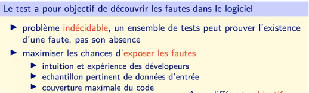
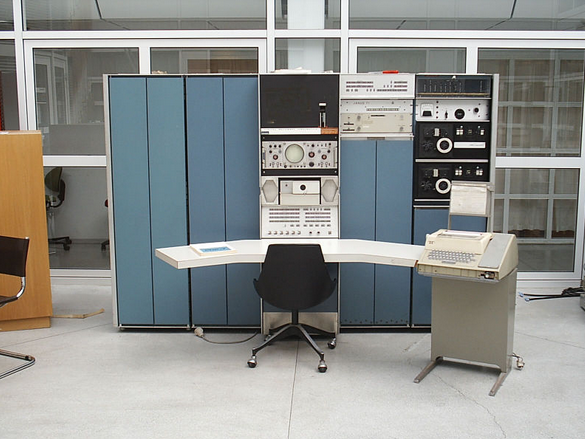un pdp-7 restauré
IBM 1981
 Le next de tim berners-lee
Le next de tim berners-lee
1984
https://upload.wikimedia.org/wikipedia/commons/7/77/Unix_history-simple.svg
{kind=link}
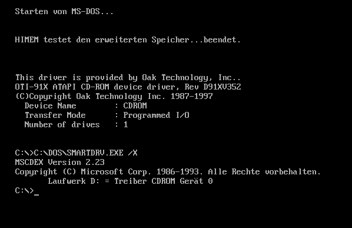
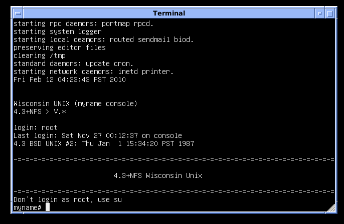
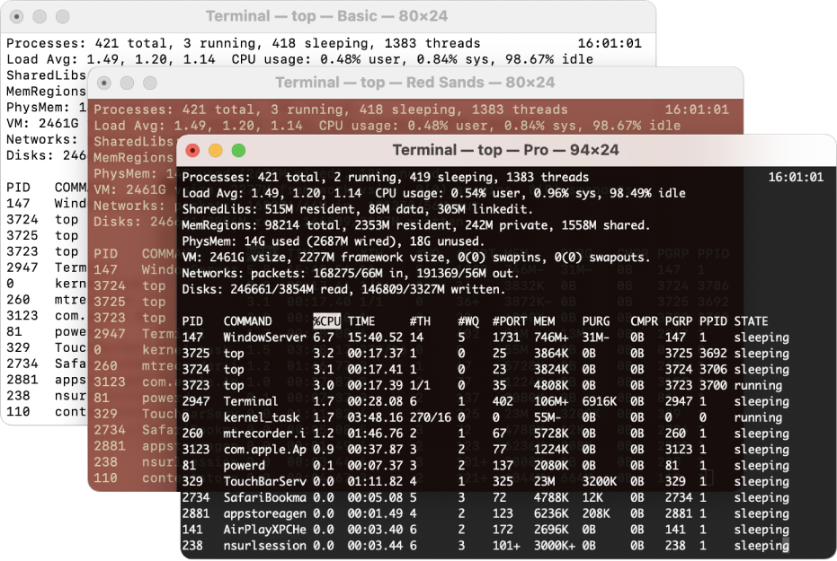
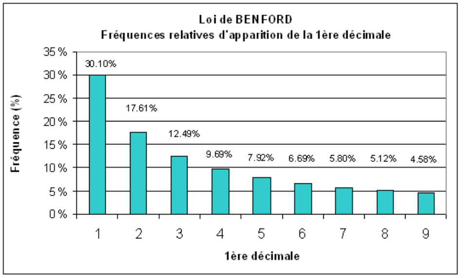
https://www.youtube.com/watch?v=1EWQYAfuMYw
wget https://github.com/phyver/GameShell/raw/master/GameShell.tgz -O - | tar -xz
./GameShell/start.sh
https://pythontutor.com/visualize.html#mode=edit
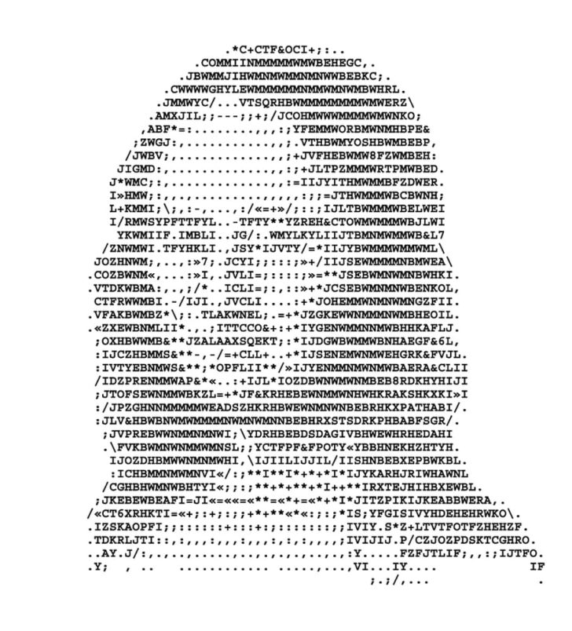 ~/Documents/NSI_2022_2023_prem/str_encodage_car/exemple.html
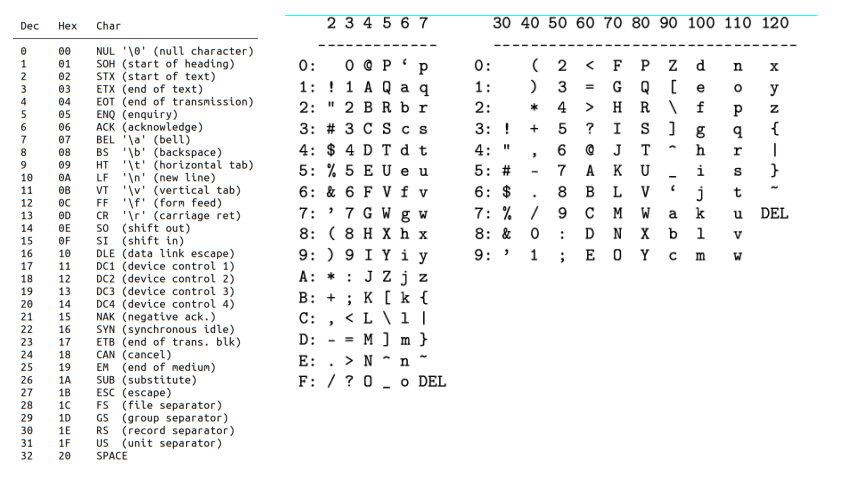
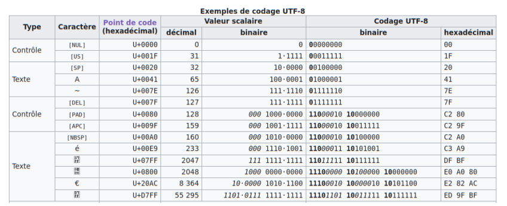
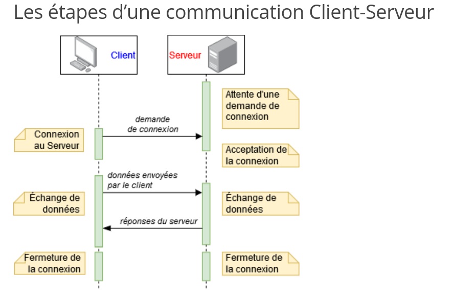
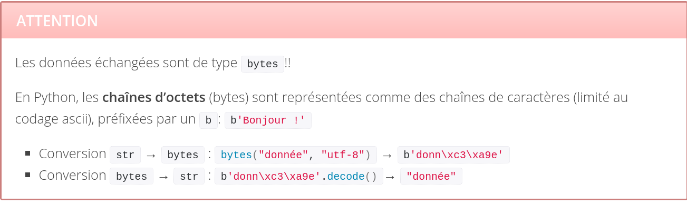
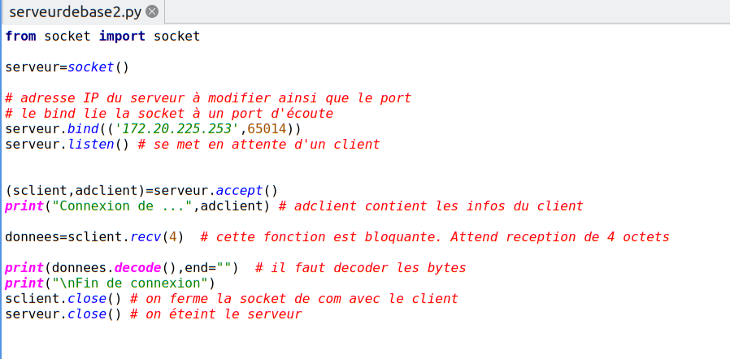
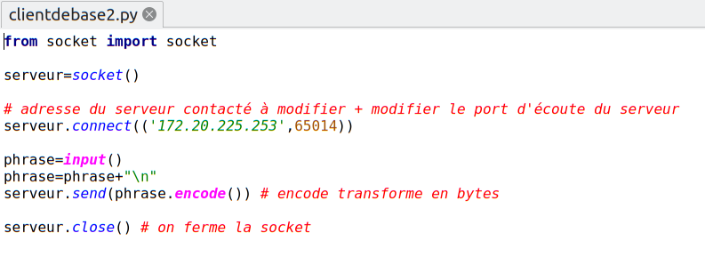
vendredi serveur chifoumi
\(T =\)variable aléatoire donnant la durée de vie d'un atome.
1 Point de vue probabiliste
Modèle de désintégration = durée de vie sans vieillissement :
La probabilité qu'un atome soit « vivant » à l'intant \(t + h\) sachant qu'il est « vivant » à l'instant \(t\) ne dépend pas de \(t\) (quel que soit \(h\)) :
On en tire que1em: \(P (T > t + h) = P (T > t) \times P (T > h)\) pour tout \(t, h\)
La fonction \(G (x) = P (T > x)\) vérifie donc la propriété : \(G (x + y) = G (x) \times G (y)\) pour \(x, y \geqslant 0\)
Alors on peut alors démontrer qu'une telle fonction est une exponentielle. Plus précisément, il existe un réel \(\lambda > 0\) (\(> 0\) car une probabilité \(\in [0 ; 1]\)) tel que \(G (x) = e^{\- \lambda x}\).
On a donc \(P (T > t) = e^{\- \lambda t} \Longleftrightarrow P (T \leqslant t) = 1 - e^{- \lambda t}\).
Ce sont les formules de calcul des probabilités d'une loi exponentielle à densité \(f (t) = \lambda e^{\- \lambda t}\).
La valeur moyenne dans une loi exponentielle est \(\dfrac{1}{\lambda}\). C'est donc la durée moyenne de vie d'un atome avec ce modèle.
2 Point de vue statistique
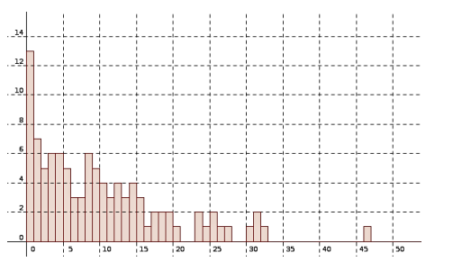
En statistique, on réfléchit sur un échantillon.
Si on appelle \(N (t)\) le nombre d'atomes vivants à l'instant \(t\), on doit plutôt considérer ce nombre comme une moyenne, la moyenne de \(N\_{0}\) variables aléatoires dont chacune vaut 1 si l'atome est vivant et 0 sinon (=la valeur moyenne d'une variable suivant une loi binômiale).
Il faut d'abord préciser le modèle précédent :
- chaque atome se désintègre sans vieillissement
- les atomes ne s'influencent pas et au départ, on en a \(N\_{0}\).
A l'instant \(t\), chaque atome a une probabilité \(P (T > t) = e^{\- \lambda t}\) d'ếtre vivant. Comme on en a \(N\_{0}\), le nombre de survivants sera en moyenne \(N\_{0} e^{\- \lambda t}\). (loi binomiale : nombre répétitions × proba succès))
En gros, on peut considérer \(\dfrac{N (t)}{N\_{0}}\) comme la proportion de survivants à l'instant \(t\) et elle vaut \(P (T > t) = e^{\- \lambda t}\).
Expérimentalement, on va seulement observer un échantillon d'atomes qui donnera des valeurs expérimentales \(\hat{N} (t)\) « proches » de \(N (t)\).
On mesure les durées de vie d'atomes dans un échantillon et on place les résultats dans un histogramme : (en ordonnées: %tage de survivants à l'instant \(t\))
Sur un échantillon, on voit que les sommets des barres semblent suivre une fonction cste × exponentielle (en fait la densité). En effet, \(\hat{N} (t) \approx N (t) = N_{0} e^{\- \lambda t}\)
3 Point de vue différentiel
La vitesse instantannée de désintégration est :
\[ \lim _{h \longrightarrow 0} \dfrac{N (t) - N (t + h)}{h} = N' (t) \]
où \(N (t)\) est la variable aléatoire donnant le nombre moyen d'atomes vivants à l'instant \(t\) .
Expérimentalement, en estimant \(N (t)\) et \(N (t + h)\) sur un échantillon (on devrait dire : $\hat{N} (t) $et \(\hat{N} (t + h)\)), on doit pouvoir observer que cette vitesse est une constante × exponentielle ce qui veut dire que \(\dfrac{N' (t)}{N (t)}\) semble être une constante indépendante de t.
Or \(\dfrac{N' (t)}{N (t)} = \dfrac{\dfrac{N' (t)}{N\_{0}}}{\dfrac{N (t)}{N\_{0}}} = \- \dfrac{{\lim \_{h \longrightarrow 0}}\_{} P (t < T < t + h)}{P (t > h)} = \lim \_{t \longrightarrow 0} \- \dfrac{P (t < T < t + h)}{P (T > h)} = \- \lim \_{h \longrightarrow 0} P\_{(T > h)} (t < T < t + h)\)
On appelle λ cette constante$ \lim _{h \longrightarrow 0} P_{(T > t)} (t < T < t + h)$; on l'interpèrete comme :
- le taux de défaillance instantannée à l'instant \(t\) (c'est l'interprétation de \(\- \dfrac{N' (t)}{N (t)}\))
- la probabilité qu'à un instant \(t\) un vivant se désintègre.
On a donc : N'(t)N(t)\(= \- \lambda\) et donc \(N (t) = C e^{\- \lambda t}\) et finalement : \(N (t) = N\_{0} e^{\- \lambda t}\) c'est-à-dire \(\dfrac{N (t)}{N\_{0}} = e^{\- \lambda t}\)
Comme vu plus haut : \(\dfrac{N (t)}{N\_{0}} = P (T > t)\) donc \(P (T > t) = e^{\- \lambda t}\) et on retombe sur les formules de la loi exponentielle[^1].
[^1]: On peut démontrer qu'un objet qui subit un taux de défaillance constant \(\lambda\) a une durée de vie vérifiant la loi exponentielle de paramètre \(\lambda\) .